ARworks arculat
Márkalap
Logók, színek, betűk és komponensek egy helyen. Minden érték a dist/arworks.css-ből jön — ez az oldal azt mutatja, amit más projektbe is át lehet venni.
01 · Logó
Logó-változatok
logos/arworks_logo_landscape_onlight.png — világos háttérre
logos/arworks_logo_landscape_ondark.png — sötét háttérre
logos/arworks_logo_portrait_ondark.png — álló, sötét háttérre (narancs „A”, fehér WORKS)

logos/arworks_logo_portrait_white.png — egyszínű fehér (vízjelnek, képre, narancs alapra)
Fejlécben a fekvő logó 20 px magas. Körülötte legalább a logó „A” betűjének fele szabad hely maradjon. Ne nyújtsd, ne színezd át, ne tegyél rá árnyékot, és ne tedd a világos változatot világos, a sötétet sötét háttérre.
02 · Szín
Narancs + tiszta szürke
A márka egyetlen kiemelő színe a narancs. Nagy felületen ritka; jellemzően gomb, kicker, aláhúzás, kiemelt keret.
Márkanarancs
Semleges
Állapot (szűken)
03 · Betű
Három betűcsalád, három szerep
Display · Jost 300
NAGYBETŰS · betűköz 0,08 em
Mutassa meg az autót
Törzs · Space Grotesk
16 / 1,55 · lede 19 px
Egyedi fejlesztések, adaptálható platformok és kész szoftverek tréninghez, értékesítéshez.
Törzsszöveg: tiszta, jól olvasható, nem túl hosszú sorokkal (legfeljebb 70 karakter).
Címke · Space Mono
12 px · NAGYBETŰS · 0,14 em
ARworks — Budapest · 2011 ótaJelvényTechnikai felirat
04 · Komponens
Gomb, kártya, címke, mező
Gombok
Kártyák
Alap
Kártya
Hajszálkeret, 4 px sarok.
Kiemelt
Narancs felső vonal
Hover: keretet vált.
Inverz
Sötét kártya
Sötét sávra.
Címkék, állapot
AlapKattinthatóKijelölt
SikeresFigyelemHiba
Űrlap
05 · Elrendezés
Térköz, sarok, mozgás
Térköz (4 px alap)
Sarok
0
2 px — mező, gomb
4 px — kártya
pill — címke
Tartalomoszlop
1160 px (fejléc sávja: 1360 px); szekció: 80 px fent/lent, 32 px oldalt (telefonon 56 / 24).
Mozgás
Gyors, csendes: 120 ms (hover), 200 ms, 350 ms;
cubic-bezier(0.16, 1, 0.3, 1). A hover színt/keretet vált, nem emelkedést. prefers-reduced-motion mellett nincs animáció.